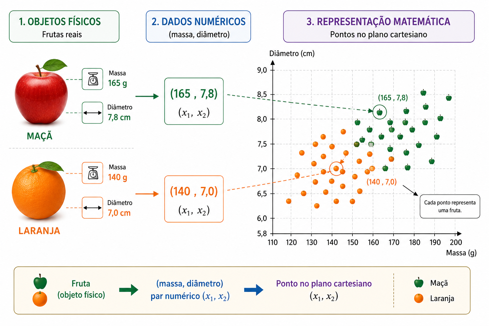
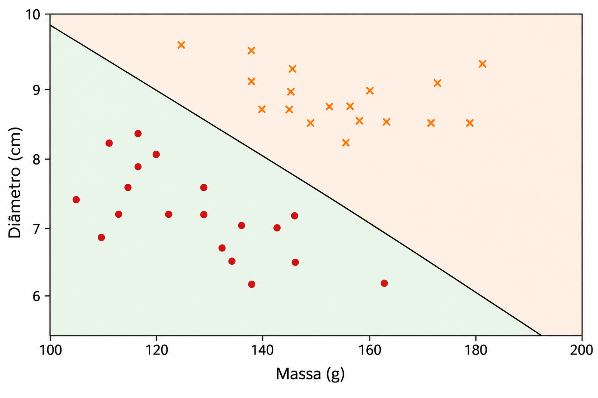
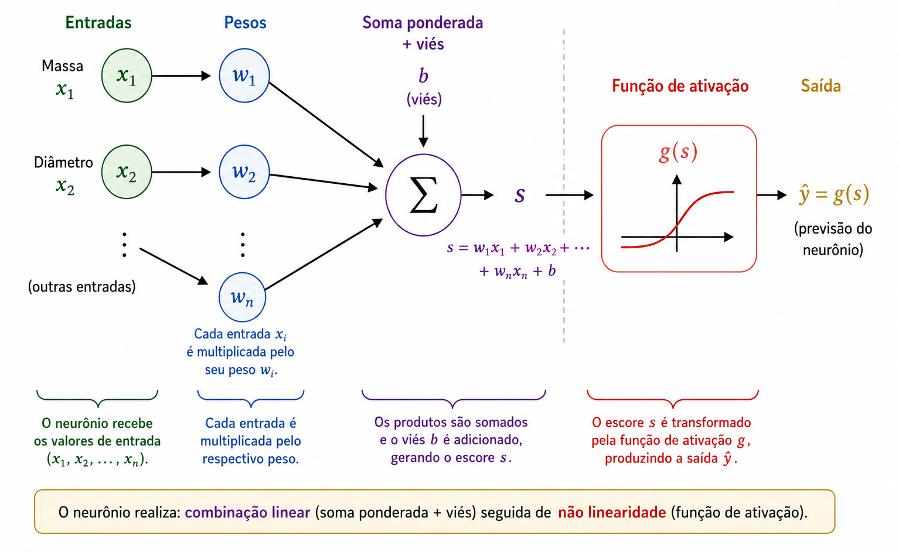
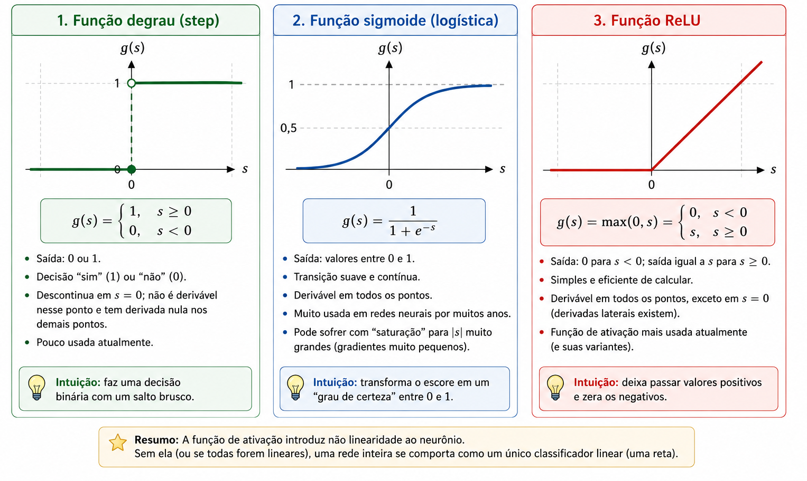
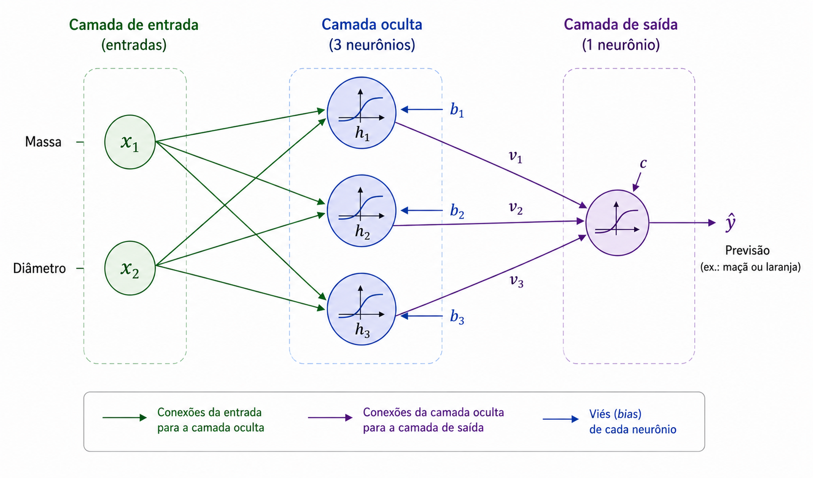
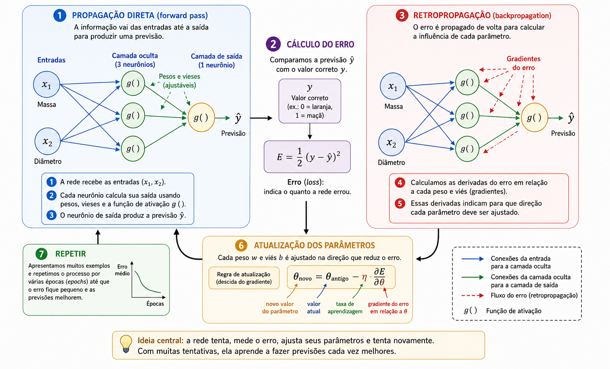
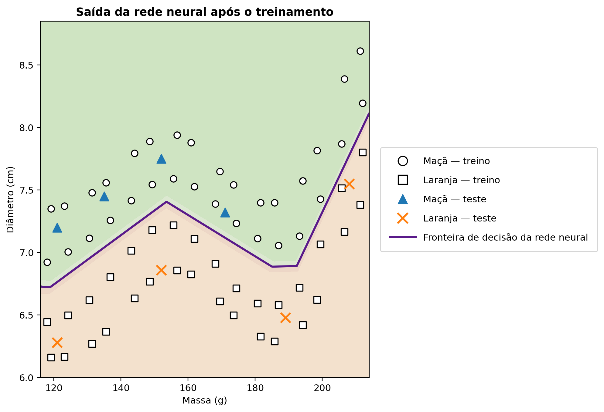

Quando um computador pode aprender?
Em nosso cotidiano, tomamos decisões de classificação quase sem perceber. Ao observar uma fruta, identificamos rapidamente se ela é uma maçã ou uma laranja; ao receber uma mensagem no celular, distinguimos uma conversa legítima de uma propaganda indesejada; na análise de exames, diferentes medidas podem ser combinadas para auxiliar uma decisão; e, em uma instituição financeira, diversas informações são avaliadas antes da concessão de crédito. Em todos esses exemplos, várias características são consideradas em conjunto para produzir uma resposta.
Em muitos programas tradicionais, as regras que conduzem a essa resposta são especificadas explicitamente pelo programador. Essa estratégia funciona bem quando as regras são conhecidas e podem ser descritas com clareza, mas se torna limitada quando os dados apresentam grande variabilidade ou quando não sabemos formular antecipadamente todas as condições necessárias para uma boa decisão. Surge então uma pergunta natural:
Seria possível construir um programa capaz de aprender uma regra de decisão a partir de exemplos, em vez de recebê-la pronta?
Essa é uma das ideias centrais do aprendizado de máquina, área da Inteligência Artificial dedicada ao desenvolvimento de métodos que ajustam modelos a partir de dados . Em um problema de aprendizado supervisionado, fornecemos ao algoritmo exemplos acompanhados das respostas corretas e procuramos determinar um modelo capaz de produzir boas previsões também para casos que não participaram do treinamento. Entre os diversos modelos empregados para esse fim, as redes neurais artificiais adquiriram grande importância em aplicações como reconhecimento de imagens, processamento de linguagem, análise de sinais e previsão de séries temporais .
A utilização de redes neurais como tema de aproximação entre Matemática, computação e Educação Básica já foi discutida, no contexto da própria Professor de Matemática Online, por Batista e Martins , que apresentam uma proposta envolvendo formação de professores e reconhecimento de dígitos por meio de Python. O presente artigo segue um percurso complementar: nosso objetivo principal é explicitar a estrutura matemática interna de uma pequena rede neural, partindo da Geometria Analítica e chegando, passo a passo, ao cálculo dos gradientes e à implementação manual da retropropagação.
Apesar da sofisticação das aplicações atuais, a estrutura matemática fundamental de uma rede neural pode ser apresentada a partir de conceitos relativamente familiares. Em essência, uma rede neural é uma composição de funções cujos parâmetros são ajustados a partir dos dados. Partiremos de um problema geométrico simples, reinterpretaremos uma reta classificadora como um neurônio artificial, conectaremos vários neurônios, estudaremos o papel das funções de ativação e mostraremos como derivadas podem ser utilizadas para ajustar automaticamente os parâmetros da rede. Ao final, implementaremos em Python um pequeno exemplo completo de treinamento, estabelecendo uma correspondência direta entre as equações e o código.
Representando o problema matematicamente
Para compreender como uma rede neural funciona, começaremos com um problema deliberadamente simples: distinguir maçãs de laranjas. Uma fruta possui muitas características que poderiam ser utilizadas nessa tarefa, como cor, massa, diâmetro, textura e aroma. Entretanto, um modelo matemático inicial não precisa incorporar toda essa complexidade. Escolheremos apenas duas grandezas facilmente mensuráveis: a massa, expressa em gramas, e o diâmetro, expresso em centímetros.
Cada fruta será, portanto, representada por um par ordenado \[(x_1,x_2),\] em que \[x_1=\text{massa} \qquad\text{e}\qquad x_2=\text{diâmetro}.\]
Assim, o par \((155,\;7{,}2)\) representa uma fruta com massa de \(155\) g e diâmetro de \(7{,}2\) cm. Ao substituir o objeto físico por duas medidas numéricas, associamos cada fruta a um ponto do plano cartesiano: a primeira coordenada indica sua massa e a segunda, seu diâmetro. A Figura 1 ilustra essa representação para um conjunto hipotético de maçãs e laranjas.

Essa transformação altera a natureza aparente do problema. Em vez de perguntar diretamente como reconhecer uma maçã ou uma laranja, passamos a formular uma questão geométrica: como separar, no plano, os pontos correspondentes às duas classes? Essa mudança de perspectiva é fundamental em aprendizado de máquina. Imagens, textos, sons e sinais experimentais precisam ser convertidos em representações numéricas antes de serem processados por um algoritmo. No exemplo considerado, cada objeto é representado por apenas duas coordenadas; em aplicações reais, uma representação pode possuir centenas, milhares ou até milhões de componentes. O princípio, contudo, permanece o mesmo: cada exemplo é associado a um conjunto de números, e o modelo procura uma regra que relacione essa representação à resposta desejada.
Começaremos pela regra geométrica mais simples possível. Investigaremos se uma única reta pode separar adequadamente os pontos correspondentes às maçãs daqueles associados às laranjas.
Uma reta como classificador
Uma vez que cada fruta foi representada por um ponto do plano cartesiano, o problema de classificação pode ser formulado geometricamente: seria possível traçar uma reta que separasse as maçãs das laranjas? Essa pergunta expressa a ideia central de uma importante classe de métodos de aprendizado de máquina, os chamados classificadores lineares.
Considere uma reta que atravesse o conjunto de dados, como ilustra a Figura 2. Ela divide o plano em dois semiplanos. Se os pontos correspondentes às maçãs estiverem predominantemente de um lado e os pontos associados às laranjas estiverem do outro, a posição de uma nova fruta em relação à reta poderá ser utilizada como regra de classificação. Depois de medir sua massa e seu diâmetro, representamos a fruta por um ponto e verificamos em qual das duas regiões ele se encontra.

No plano cartesiano \((x_1,x_2)\), uma reta pode ser descrita por uma equação da forma
\[w_1x_1+w_2x_2+b=0, \qquad (w_1,w_2)\neq(0,0).\]
O vetor \((w_1,w_2)\) é perpendicular à reta e, portanto, determina sua orientação, enquanto o parâmetro \(b\) contribui para determinar sua posição no plano. Há uma pequena redundância nessa representação: se multiplicarmos \(w_1\), \(w_2\) e \(b\) pelo mesmo número não nulo, obtemos exatamente a mesma reta. Assim, os parâmetros que descrevem a fronteira não são únicos. Além disso, a interpretação numérica dos pesos depende da escala das variáveis. Como a massa é expressa em gramas e o diâmetro em centímetros, os valores de \(w_1\) e \(w_2\) não devem ser comparados diretamente sem levar em conta essa diferença de unidades.
A própria equação da reta fornece uma maneira simples de determinar de qual lado da fronteira um ponto se encontra. Para isso, calculamos o escore
\[s(x_1,x_2)=w_1x_1+w_2x_2+b.\]
Quando \(s(x_1,x_2)=0\), o ponto pertence à reta. Quando \(s(x_1,x_2)>0\), ele está em um dos semiplanos determinados por ela; quando \(s(x_1,x_2)<0\), está no semiplano oposto. Se convencionarmos que valores positivos correspondem a maçãs e valores negativos a laranjas, a regra de decisão pode ser escrita como
\[\begin{cases} s(x_1,x_2)\geq 0 & \Longrightarrow \text{maçã},\\ s(x_1,x_2)<0 & \Longrightarrow \text{laranja}. \end{cases}\]
Considere, por exemplo, a fronteira definida por
\[w_1=\frac{1}{10}, \qquad w_2=2, \qquad b=-30.\]
Para uma fruta com massa de \(160\) g e diâmetro de \(7{,}8\) cm, obtemos
\[\begin{aligned} s &=\frac{1}{10}\times160+2\times7{,}8-30\\ &=16+15{,}6-30\\ &=1{,}6. \end{aligned}\]
Como o escore é positivo, o ponto encontra-se no semiplano que, pela convenção adotada, corresponde às maçãs. O modelo classificaria, portanto, essa fruta como uma maçã.
Nem toda escolha de \(w_1\), \(w_2\) e \(b\) produz uma boa classificação. Algumas retas separam mal os dois grupos, enquanto outras cometem menos erros. O problema de aprendizagem consiste justamente em utilizar exemplos previamente classificados para determinar valores desses parâmetros que reduzam uma medida de erro do modelo. Em vez de programarmos diretamente a posição da reta, procuraremos fazer com que o algoritmo ajuste seus coeficientes a partir dos dados.
Uma única reta pode resolver satisfatoriamente problemas em que as classes são aproximadamente separáveis por uma fronteira linear. Entretanto, existem situações em que os pontos se distribuem de maneira mais complexa e nenhuma reta consegue distingui-los adequadamente. Antes de examinar como superar essa limitação, reinterpretaremos o classificador que acabamos de construir como uma unidade elementar de cálculo: o neurônio artificial.
O neurônio artificial
Na seção anterior, a expressão
\[s=w_1x_1+w_2x_2+b\] foi utilizada para determinar de que lado de uma reta se encontra o ponto que representa uma fruta. A mesma expressão pode ser interpretada como a primeira etapa do cálculo realizado por um neurônio artificial. O neurônio recebe números como entrada, combina-os por meio de pesos e de um viés e, em seguida, aplica uma função matemática para produzir uma saída.
No problema considerado, as entradas são a massa \(x_1\) e o diâmetro \(x_2\). Cada entrada é multiplicada por um parâmetro, chamado peso, e os produtos são somados ao termo constante \(b\), denominado viés. A Figura 3 representa esquematicamente esse processo.

Os pesos determinam como variações nas entradas afetam o escore. Se mantivermos \(x_2\) e os demais parâmetros fixos, uma variação \(\Delta x_1\) provoca uma variação \(w_1\Delta x_1\) em \(s\); analogamente, uma variação \(\Delta x_2\) provoca uma variação \(w_2\Delta x_2\). O sinal do peso também é relevante: um peso positivo faz com que o aumento da entrada aumente o escore, enquanto um peso negativo produz o efeito contrário. Essa interpretação deve ser feita com cuidado quando as variáveis possuem unidades e escalas muito diferentes. Por isso, em aplicações práticas, é comum normalizar ou padronizar os dados antes do treinamento.
O viés \(b\) é o termo constante da transformação afim. Geometricamente, ele permite deslocar a fronteira de decisão. Se \(b=0\), a equação \[w_1x_1+w_2x_2=0\] obriga a reta a passar pela origem. Com a presença do viés, a fronteira pode ocupar outras posições no plano. Outra maneira de interpretar esse parâmetro é observar que, quando \(x_1=x_2=0\), o escore assume o valor \(s=b\).
O escore não precisa ser a saída final do neurônio. Em geral, aplicamos a ele uma função de ativação, denotada por \(g\), e obtemos \[\widehat{y}=g(s)=g\left(w_1x_1+w_2x_2+b\right).\]
Assim, o cálculo pode ser organizado em duas etapas: \[\begin{aligned} s &= w_1x_1+w_2x_2+b,\\[4pt] \widehat{y} &= g(s). \end{aligned}\]
Na primeira linha, as entradas passam por uma transformação afim; na segunda, o resultado é transformado pela função de ativação. Retomando os valores da seção anterior, encontramos \(s=1{,}6\). Se adotarmos a função degrau \[g(s)= \begin{cases} 1, & s\geq0,\\ 0, & s<0, \end{cases}\] então \(\widehat{y}=g(1{,}6)=1\). Pela convenção estabelecida, a fruta é classificada como maçã. Com essa função de ativação, a decisão muda quando \(s\) atravessa o valor zero; portanto, a fronteira entre as classes é exatamente \[w_1x_1+w_2x_2+b=0.\]
Um neurônio isolado é, assim, uma estrutura matemática simples, com parâmetros ajustáveis. Sua importância está na possibilidade de conectar várias unidades desse tipo. Antes de construirmos uma rede, porém, precisamos compreender por que a função de ativação é indispensável nessa composição.
Por que precisamos de uma função de ativação?
Um neurônio calcula primeiro um escore por meio de uma transformação afim e somente depois aplica uma função de ativação. Essa segunda etapa é fundamental para a capacidade de uma rede neural representar relações complexas. Para compreender por quê, imaginemos uma rede na qual nenhuma função de ativação seja utilizada. Nesse caso, a saída de cada unidade teria apenas a forma
\[y=w_1x_1+w_2x_2+b.\]
Suponha, para simplificar, que a saída de uma primeira unidade seja
\[h=ax+b\]
e que uma segunda unidade calcule
\[y=ch+d.\]
Substituindo a primeira expressão na segunda,
\[y=c(ax+b)+d=acx+(cb+d),\] que continua sendo uma função afim de \(x\). O mesmo princípio vale em várias dimensões: a composição de transformações afins continua sendo uma transformação afim. Portanto, acrescentar muitas camadas sem introduzir alguma operação não linear não torna a rede essencialmente mais expressiva; toda a composição poderia ser substituída por uma única transformação do mesmo tipo.
A função de ativação rompe essa limitação. Depois de calcular o escore \(s\), o neurônio aplica uma função geralmente não linear, \[h=g(s).\]
Com várias dessas unidades conectadas, a composição já não pode ser reduzida a uma única transformação afim. Isso permite construir fronteiras de decisão mais complexas.
A função de ativação mais simples é o degrau,
\[g(s)= \begin{cases} 1, & s\geq0,\\ 0, & s<0. \end{cases}\]
Ela produz uma decisão binária e é muito útil para compreender a ideia de classificação. Entretanto, sua derivada é nula para \(s\neq0\) e não existe em \(s=0\). Como o treinamento por métodos de gradiente utiliza derivadas para determinar como os parâmetros devem ser modificados, a função degrau não é adequada para esse tipo de treinamento.
Uma alternativa é a função sigmoide,
\[\sigma(s)=\frac{1}{1+e^{-s}}.\]
Ela transforma qualquer número real em um valor estritamente compreendido entre \(0\) e \(1\). Para valores muito negativos de \(s\), a saída aproxima-se de \(0\); para valores muito positivos, aproxima-se de \(1\); entre esses extremos, a transição é suave. Além disso, a sigmoide é diferenciável em todos os pontos, com
\[\sigma'(s)=\sigma(s)\bigl(1-\sigma(s)\bigr).\]
Por produzir valores entre \(0\) e \(1\), ela é frequentemente utilizada na camada de saída de classificadores binários. Quando combinada com uma formulação probabilística e uma função de perda apropriada, sua saída pode ser interpretada como uma estimativa da probabilidade da classe representada por \(1\). Nas camadas internas, porém, a sigmoide pode apresentar uma dificuldade: para valores de grande módulo, sua derivada se aproxima de zero, o que pode contribuir para o chamado desaparecimento do gradiente (vanishing gradient) em redes profundas.
Uma função muito utilizada em camadas ocultas é a ReLU (Rectified Linear Unit), definida por
\[\operatorname{ReLU}(s)=\max(0,s) = \begin{cases} 0, & s<0,\\ s, & s\geq0. \end{cases}\]
Embora seja formada por dois trechos lineares, a ReLU não é uma função linear globalmente. Sua derivada vale \(0\) para \(s<0\) e \(1\) para \(s>0\); em \(s=0\), a derivada não existe no sentido usual e, nas implementações computacionais, adota-se uma convenção para o cálculo do gradiente. Para valores positivos, a derivada não diminui à medida que \(s\) cresce, o que evita um dos mecanismos de saturação presentes na sigmoide.
A Figura 4 reúne os gráficos das três funções e permite comparar visualmente seus comportamentos: o salto abrupto do degrau, a transição suave da sigmoide e a mudança de inclinação da ReLU.

As principais características podem ser resumidas na tabela a seguir.
| Função | Saída | Derivada | Uso típico |
|---|---|---|---|
| Degrau | \(\{0,1\}\) | Nula para \(s\neq0\); não existe em \(s=0\) | Modelos históricos e exemplos didáticos |
| Sigmoide | \((0,1)\) | Existe para todo \(s\) | Saída em classificação binária |
| ReLU | \([0,\infty)\) | \(0\) para \(s<0\) e \(1\) para \(s>0\) | Camadas ocultas |
As diferenças entre essas funções são importantes, mas o papel conceitual das ativações não lineares é comum: impedir que uma sequência de camadas seja reduzida a uma única transformação afim. É essa não linearidade que permitirá construir, na próxima seção, uma pequena rede com capacidade de representar relações mais complexas do que uma única reta.
Para o leitor que desejar aprofundar essas ideias, Haykin apresenta uma exposição clássica das redes neurais, enquanto Goodfellow, Bengio e Courville discutem as funções de ativação e o treinamento de redes profundas em um contexto mais amplo. O texto de Nielsen , disponível livremente na internet, constitui uma introdução particularmente acessível à relação entre neurônios, funções de ativação e aprendizagem.
Construindo uma pequena rede neural
Consideraremos agora uma rede formada por duas entradas, uma camada oculta com três neurônios e uma camada de saída com um neurônio. As entradas continuam sendo \[x_1=\text{massa}, \qquad x_2=\text{diâmetro},\] e são fornecidas simultaneamente aos três neurônios ocultos, como mostra a Figura 5.

Representaremos as saídas da camada oculta por \(h_1\), \(h_2\) e \(h_3\). Cada neurônio recebe as mesmas duas entradas, mas possui seus próprios pesos e seu próprio viés: \[\begin{aligned} h_1&=g\left(w_{11}x_1+w_{12}x_2+b_1\right),\\[4pt] h_2&=g\left(w_{21}x_1+w_{22}x_2+b_2\right),\\[4pt] h_3&=g\left(w_{31}x_1+w_{32}x_2+b_3\right). \end{aligned}\]
Embora os três neurônios recebam a mesma massa e o mesmo diâmetro, podem produzir respostas diferentes porque seus parâmetros são distintos. Durante o treinamento, esses parâmetros serão ajustados de modo que as ativações intermediárias se tornem úteis para a classificação.
As três quantidades \(h_1\), \(h_2\) e \(h_3\) são então encaminhadas ao neurônio da camada de saída, que calcula \[s_{\mathrm{out}}=v_1h_1+v_2h_2+v_3h_3+c\] e produz a previsão \[\widehat{y}=g_{\mathrm{out}}\left(s_{\mathrm{out}}\right).\]
Em nosso problema binário, utilizaremos a sigmoide na saída. Assim, \[\widehat{y}=\sigma\left(v_1h_1+v_2h_2+v_3h_3+c\right), \qquad 0<\widehat{y}<1.\]
Adotando \(y=1\) para maçã e \(y=0\) para laranja, podemos utilizar o limiar \(0{,}5\) para produzir uma decisão: \[\widehat{y}\geq0{,}5 \Longrightarrow \text{maçã}, \qquad \widehat{y}<0{,}5 \Longrightarrow \text{laranja}.\]
Valores próximos de \(1\) estão, portanto, fortemente associados à classe das maçãs, enquanto valores próximos de \(0\) estão associados à classe das laranjas. Como discutido anteriormente, interpretar numericamente \(\widehat{y}\) como uma probabilidade exige hipóteses adicionais sobre o modelo e seu treinamento; para a regra de classificação utilizada aqui, basta tratá-lo como a saída contínua da rede.
O aspecto central dessa arquitetura é a representação intermediária \[(x_1,x_2) \longrightarrow (h_1,h_2,h_3) \longrightarrow \widehat{y}.\]
A rede recebe duas características e constrói três novas quantidades antes de produzir a resposta final. Essas ativações não foram escolhidas manualmente: dependem dos pesos e vieses e, portanto, mudam à medida que os parâmetros são treinados.
Apesar de pequena, a rede já possui treze parâmetros ajustáveis. Os três neurônios ocultos possuem, ao todo, \[3(2+1)=9\] parâmetros, e o neurônio de saída acrescenta \[3+1=4.\]
Logo, \[9+4=13.\]
Essa contagem também pode ser entendida em notação matricial. Definindo \[\mathbf{x}= \begin{bmatrix} x_1\\x_2 \end{bmatrix}, \qquad W^{(1)}= \begin{bmatrix} w_{11}&w_{12}\\ w_{21}&w_{22}\\ w_{31}&w_{32} \end{bmatrix}, \qquad \mathbf{b}^{(1)}= \begin{bmatrix} b_1\\b_2\\b_3 \end{bmatrix},\] podemos escrever a camada oculta de forma compacta como \[\mathbf{h}=g\left(W^{(1)}\mathbf{x}+\mathbf{b}^{(1)}\right),\] em que \(g\) é aplicada componente a componente. Para a saída, \[\widehat{y} = \sigma\left(W^{(2)}\mathbf{h}+b^{(2)}\right),\] com \[W^{(2)}= \begin{bmatrix} v_1&v_2&v_3 \end{bmatrix}.\]
Essa escrita antecipa a forma que aparecerá no programa em Python. Quando uma fruta é apresentada à entrada e calculamos sucessivamente as ativações até obter \(\widehat{y}\), realizamos a propagação direta (forward propagation). Resta agora responder à questão central: como determinar automaticamente os treze parâmetros para que as previsões se tornem adequadas aos dados?
Como uma rede neural aprende?
Os pesos e vieses da rede não são conhecidos antecipadamente. Eles precisam ser ajustados a partir de exemplos para os quais a resposta correta é conhecida. Esse processo recebe o nome de treinamento e pode ser resumido pelo ciclo:
\[\boxed{\text{prever}} \longrightarrow \boxed{\text{medir o erro}} \longrightarrow \boxed{\text{ajustar os parâmetros}} \longrightarrow \boxed{\text{repetir}}\]
Considere uma fruta com massa de \(140\) g e diâmetro de \(7{,}0\) cm, cuja classe correta é laranja, isto é, \(y=0\). Suponha que, em determinado momento do treinamento, a rede produza \(\widehat{y}=0{,}80\). Uma forma simples de medir a discrepância entre a previsão e a resposta correta é utilizar o erro quadrático \[E=\frac{1}{2}\left(y-\widehat{y}\right)^2.\]
Nesse exemplo, \[E=\frac{1}{2}(0-0{,}80)^2=0{,}32.\]
Essa expressão é uma função de perda para um único exemplo. Como se trata de um quadrado, temos sempre \(E\geq0\), e previsões mais distantes da resposta correta recebem penalidades progressivamente maiores. O fator \(1/2\) não altera a posição do mínimo da função, mas simplifica as derivadas que aparecerão durante o treinamento. Em problemas de classificação binária, outras funções de perda são muito utilizadas, especialmente a entropia cruzada; adotaremos aqui o erro quadrático por sua transparência algébrica e por ser suficiente para apresentar os mecanismos de otimização e retropropagação .
Se o conjunto de treinamento possui \(N\) exemplos, uma maneira de avaliar globalmente o desempenho é considerar a perda média \[J=\frac{1}{N}\sum_{i=1}^{N}E_i.\]
A previsão de cada exemplo depende dos pesos e vieses; portanto, \(J\) também depende de todos esses parâmetros. Treinar a rede significa procurar valores que tornem essa função pequena.
Para compreender o mecanismo de ajuste, consideremos inicialmente um único peso \(w\), mantendo todos os demais parâmetros fixos. Podemos então imaginar a perda como uma função \(J=J(w)\). Antes de examinar esse ajuste em detalhe, a Figura 6 resume as quatro etapas que compõem o treinamento e que serão descritas a seguir.

Para o leitor menos familiarizado com Cálculo, é suficiente interpretar o conceito de derivada, neste ponto, como uma medida de sensibilidade local: ela informa como uma pequena alteração em um parâmetro tende a modificar o valor da função de perda. O sinal indica para qual lado a função cresce ou diminui, enquanto o módulo fornece uma medida da intensidade dessa variação local.
A derivada \[\frac{\partial J}{\partial w}\] informa a inclinação local dessa curva. Se a derivada é positiva, um pequeno aumento de \(w\) tende a aumentar \(J\), de modo que devemos deslocar o peso no sentido oposto. Se a derivada é negativa, aumentar \(w\) tende localmente a diminuir \(J\). Os dois casos são reunidos na atualização \[w_{\mathrm{novo}} = w_{\mathrm{antigo}} - \eta\frac{\partial J}{\partial w},\] que expressa a ideia básica da descida do gradiente. O número positivo \(\eta\) é a taxa de aprendizagem: ele controla o tamanho do passo. Um valor muito pequeno pode tornar o treinamento lento; um valor excessivamente grande pode produzir oscilações ou instabilidade.
Para uma rede com vários parâmetros, representaremos genericamente qualquer peso ou viés por \(\theta\). A regra torna-se \[\theta_{\mathrm{novo}} = \theta_{\mathrm{antigo}} - \eta\frac{\partial J}{\partial\theta}.\]
O conjunto de todas as derivadas parciais forma o gradiente da função de perda. Em termos geométricos, ele aponta na direção de crescimento mais rápido de \(J\); por isso, o sinal negativo produz um deslocamento local no sentido de diminuição.
Resta calcular essas derivadas em uma rede composta por várias funções. Durante a propagação direta, a informação percorre o caminho: \[\text{entradas} \longrightarrow \text{camada oculta} \longrightarrow \text{saída}.\]
Para determinar como um parâmetro das primeiras camadas influencia a perda, percorremos matematicamente essa cadeia de dependências no sentido inverso. Esse procedimento recebe o nome de retropropagação (backpropagation) e consiste, essencialmente, em uma aplicação sistemática e eficiente da regra da cadeia. O trabalho de Rumelhart, Hinton e Williams é uma referência clássica na popularização desse procedimento para o treinamento de redes com camadas ocultas; uma derivação detalhada e especialmente didática pode ser encontrada em Nielsen .
Em uma cadeia simples na qual \(E\) depende de \(\widehat{y}\), que depende de uma ativação \(h\), que por sua vez depende de um peso \(w\), temos \[\frac{\partial E}{\partial w} = \frac{\partial E}{\partial\widehat{y}} \, \frac{\partial\widehat{y}}{\partial h} \, \frac{\partial h}{\partial w}.\]
Cada fator descreve uma etapa da influência de \(w\) sobre a saída final. Em redes maiores existem muitas cadeias desse tipo, e a retropropagação organiza o cálculo de modo a reutilizar derivadas intermediárias em vez de repetir todo o processo para cada parâmetro.
Na prática, o treinamento utiliza muitos exemplos. Uma passagem completa pelo conjunto de treinamento é chamada de época (epoch). Os parâmetros podem ser atualizados após cada exemplo, como faremos no programa didático deste artigo, ou a partir de pequenos grupos de exemplos, os chamados minilotes (mini-batches), prática muito comum em redes maiores. Em ambos os casos, o ciclo de previsões, cálculo de perdas, gradientes e atualizações é repetido durante muitas épocas.
Uma maneira concreta de visualizar essa evolução é acompanhar a previsão produzida para um mesmo exemplo em diferentes momentos do treinamento. Considere novamente a fruta de massa \(140\) g e diâmetro \(7{,}0\) cm, cuja classificação correta é laranja. A Tabela 1 apresenta uma evolução hipotética. Os números não correspondem a uma execução específica; servem apenas para ilustrar o processo.
| Época | Previsão \(\widehat{y}\) | Erro \(E\) | Classificação |
|---|---|---|---|
| 1 | 0,86 | 0,37 | Maçã |
| 5 | 0,71 | 0,25 | Maçã |
| 10 | 0,55 | 0,15 | Maçã |
| 20 | 0,31 | 0,05 | Laranja |
| 40 | 0,09 | 0,004 | Laranja |
No início, a saída está próxima de \(1\) e a fruta é classificada incorretamente como maçã. À medida que os parâmetros são ajustados, a previsão diminui e, ao atravessar o limiar \(0{,}5\), passa a produzir a classificação correta. O que muda durante esse processo são os valores numéricos dos pesos e vieses; a arquitetura da rede permanece fixa.
Reduzir a perda sobre os dados de treinamento, contudo, não é o objetivo final. Uma rede útil deve produzir boas previsões também para exemplos que não participaram do ajuste dos parâmetros. Essa capacidade recebe o nome de generalização. Quando o modelo se adapta excessivamente às particularidades do conjunto de treinamento e apresenta desempenho pior em novos dados, ocorre sobreajuste (overfitting). Em uma avaliação mais cuidadosa, costuma-se separar os dados em conjuntos de treinamento, validação e teste: o primeiro é utilizado para ajustar os parâmetros, o segundo auxilia escolhas realizadas durante o desenvolvimento do modelo e o terceiro é reservado para a avaliação final. Uma discussão mais ampla sobre generalização e avaliação de modelos pode ser encontrada em Faceli et al. e Goodfellow, Bengio e Courville .
Chegamos, assim, ao significado matemático do aprendizado de uma rede neural. Aprender, nesse contexto, significa ajustar os parâmetros de uma função composta de modo a reduzir uma medida de erro nos dados e, idealmente, generalizar para novos exemplos. A rede produz uma previsão, calcula uma perda, utiliza derivadas para determinar como seus parâmetros influenciam essa perda e realiza pequenas correções sucessivas.
Da Matemática ao Python
Passaremos agora das equações para um programa de computador. O
objetivo não é recorrer a uma biblioteca especializada em redes neurais,
mas implementar diretamente, com NumPy, as operações
matemáticas desenvolvidas ao longo do artigo . Isso permite verificar, linha por
linha, como as ideias de combinação linear, função de ativação, função
de erro, retropropagação e descida do gradiente aparecem concretamente
em um código executável.
Para tornar o exemplo final mais convincente, utilizaremos um conjunto sintético de dados mais espalhado pelo domínio massa–diâmetro. Continuaremos trabalhando apenas com duas características físicas da fruta — massa, em gramas, e diâmetro, em centímetros — mas agora distribuiremos \(64\) exemplos de treinamento por uma região ampla do plano, além de reservar oito exemplos adicionais para um teste meramente ilustrativo. Os dados continuam sintéticos, mas permanecem em faixas plausíveis para maçãs e laranjas. A construção foi pensada para produzir uma fronteira de decisão não linear sem concentrar os pontos em apenas alguns agrupamentos excessivamente artificiais.
A ideia geométrica é simples. Consideramos uma curva de referência no plano massa–diâmetro e distribuímos as maçãs em duas faixas acima dessa curva, enquanto as laranjas são distribuídas em duas faixas abaixo dela. Pequenas perturbações determinísticas são introduzidas tanto nas massas quanto nos diâmetros, de modo que o conjunto ocupe uma região mais ampla do domínio. Essa estratégia produz um exemplo mais rico do que os anteriores: os pontos são numerosos, estão bem espalhados e exigem uma fronteira mais sinuosa do que uma simples reta.
Para esse experimento computacional final, ampliamos a camada oculta para doze neurônios ReLU. Essa modificação não altera a estrutura conceitual estudada nas seções anteriores; apenas aumenta a capacidade da rede de representar uma fronteira mais elaborada. Em vez dos \(13\) parâmetros da rede pedagógica com três neurônios ocultos, passamos a ter \(49\) parâmetros ajustáveis: \(24\) pesos e \(12\) vieses na primeira camada, seguidos de \(12\) pesos e um viés na camada de saída. As equações, porém, mantêm exatamente a mesma forma: apenas os vetores e matrizes ficam maiores.
O programa completo é apresentado a seguir.
import numpy as np
import matplotlib.pyplot as plt
from matplotlib.lines import Line2D
def relu(s):
return np.maximum(0, s)
def relu_derivada(s):
return (s > 0).astype(float)
def sigmoid(s):
return 1 / (1 + np.exp(-s))
def fronteira_base(m):
return 6.68 + 0.74*np.exp(-((m-155)/20)**2) \
+ 1.50/(1 + np.exp(-(m-202)/5))
def construir_dados():
massas_1 = np.linspace(118, 212, 16)
massas_2 = massas_1 + np.array([
1.2,-1.1,0.8,-1.3,1.0,-0.8,1.1,-1.0,
1.3,-0.9,0.9,-1.2,1.0,-1.0,0.8,-0.7
])
k = np.arange(16)
a1 = np.column_stack([
massas_1,
fronteira_base(massas_1) + 0.22 + 0.05*np.sin(0.8*k)
])
a2 = np.column_stack([
massas_2,
fronteira_base(massas_2) + 0.58 + 0.06*np.cos(0.45*k)
])
l1 = np.column_stack([
massas_1,
fronteira_base(massas_1) - (0.22 + 0.04*np.cos(0.7*k))
])
l2 = np.column_stack([
massas_2,
fronteira_base(massas_2) - (0.55 + 0.05*np.sin(0.5*k))
])
X_treino = np.vstack([a1, a2, l1, l2])
y_treino = np.array([1.0]*32 + [0.0]*32)
X_teste = np.array([
[121.0, 7.20], [135.0, 7.45],
[152.0, 7.75], [171.0, 7.32],
[121.0, 6.28], [152.0, 6.86],
[189.0, 6.48], [208.0, 7.55]
])
y_teste = np.array([1,1,1,1,0,0,0,0], dtype=float)
return X_treino, y_treino, X_teste, y_teste
def prever(X, media, desvio, W1, b1, W2, b2):
Xn = (X - media) / desvio
saidas = []
for x in Xn:
h = relu(W1 @ x + b1)
y_hat = sigmoid(W2 @ h + b2)
saidas.append(y_hat)
return np.array(saidas)
X_treino, y_treino, X_teste, y_teste = construir_dados()
media = X_treino.mean(axis=0)
desvio = X_treino.std(axis=0)
Xn = (X_treino - media) / desvio
rng = np.random.default_rng(42)
W1 = 0.1 * rng.standard_normal((12, 2))
b1 = np.zeros(12)
W2 = 0.1 * rng.standard_normal(12)
b2 = 0.0
eta = 0.05
n_epocas = 6000
historico = []
for epoca in range(n_epocas):
for i in rng.permutation(len(Xn)):
x = Xn[i]
alvo = y_treino[i]
z1 = W1 @ x + b1
h = relu(z1)
z2 = W2 @ h + b2
y_hat = sigmoid(z2)
delta2 = (y_hat - alvo) * y_hat * (1 - y_hat)
dW2 = delta2 * h
db2 = delta2
delta1 = (delta2 * W2) * relu_derivada(z1)
dW1 = np.outer(delta1, x)
db1 = delta1
W1 -= eta * dW1
b1 -= eta * db1
W2 -= eta * dW2
b2 -= eta * db2
erros = []
for x, alvo in zip(Xn, y_treino):
h = relu(W1 @ x + b1)
y_hat = sigmoid(W2 @ h + b2)
erros.append(0.5 * (alvo - y_hat)**2)
historico.append(np.mean(erros))
def gerar_figura():
massas = np.linspace(116, 214, 500)
diametros = np.linspace(6.0, 8.85, 500)
M, D = np.meshgrid(massas, diametros)
grade = np.column_stack([M.ravel(), D.ravel()])
P = prever(grade, media, desvio, W1, b1, W2, b2).reshape(M.shape)
fig, ax = plt.subplots(figsize=(9.2, 6.3))
ax.contourf(
M, D, P,
levels=[0.0, 0.25, 0.50, 0.75, 1.0],
colors=["#f3e0cb", "#ecd5c4", "#dbe7cf", "#cde3bf"],
alpha=0.95
)
ax.contour(M, D, P, levels=[0.5],
colors=["#5a1a8a"], linewidths=2.2)
mask = y_treino == 1.0
ax.scatter(X_treino[mask,0], X_treino[mask,1], marker="o",
s=48, facecolors="white", edgecolors="black",
linewidths=1.1, label="Maca --- treino")
mask = y_treino == 0.0
ax.scatter(X_treino[mask,0], X_treino[mask,1], marker="s",
s=48, facecolors="white", edgecolors="black",
linewidths=1.1, label="Laranja - treino")
mask = y_teste == 1.0
ax.scatter(X_teste[mask,0], X_teste[mask,1], marker="^",
s=92, color="#1f77b4", label="Maca --- teste")
mask = y_teste == 0.0
ax.scatter(X_teste[mask,0], X_teste[mask,1], marker="x",
s=110, color="#ff7f0e", linewidths=2.0,
label="Laranja - teste")
ax.set_xlabel("Massa (g)")
ax.set_ylabel("Diametro (cm)")
ax.set_title("Saida da rede neural apos o treinamento")
handles = [
Line2D([0],[0], marker='o', markersize=9,
markerfacecolor='white', markeredgecolor='black',
linestyle='None', label='Maca --- treino'),
Line2D([0],[0], marker='s', markersize=9,
markerfacecolor='white', markeredgecolor='black',
linestyle='None', label='Laranja - treino'),
Line2D([0],[0], marker='^', markersize=9, color='#1f77b4',
linestyle='None', label='Maca --- teste'),
Line2D([0],[0], marker='x', markersize=10, color='#ff7f0e',
linestyle='None', label='Laranja - teste'),
Line2D([0],[0], color='#5a1a8a', lw=2.2,
label='Fronteira de decisao da rede neural')
]
ax.legend(handles=handles, loc='center left',
bbox_to_anchor=(1.02, 0.5), frameon=True)
fig.tight_layout()
plt.show()Embora o código acima seja mais extenso do que as primeiras
expressões estudadas no artigo, sua estrutura continua transparente. A
função construir_dados() gera automaticamente os \(64\) exemplos de treinamento e os oito
exemplos de teste ilustrativo. Em seguida, padronizamos as duas
variáveis segundo \[x_j^{\ast}=\frac{x_j-\mu_j}{\sigma_j},\]
em que \(\mu_j\) e \(\sigma_j\) são calculados apenas com o
conjunto de treinamento. Isso impede que o conjunto de teste influencie
o ajuste dos parâmetros e, ao mesmo tempo, coloca massa e diâmetro em
escalas comparáveis.
A propagação direta não muda em essência. A diferença é que, agora, a primeira camada produz um vetor com doze ativações ocultas. Em notação matricial, \[\mathbf{z}^{(1)}=W^{(1)}\mathbf{x}+\mathbf{b}^{(1)}, \qquad \mathbf{h}=\operatorname{ReLU}(\mathbf{z}^{(1)}),\] \[z^{(2)}=W^{(2)}\mathbf{h}+b^{(2)}, \qquad \widehat{y}=\sigma(z^{(2)}).\] Essas quatro linhas ainda correspondem ao núcleo matemático do algoritmo. O treinamento também preserva a lógica apresentada anteriormente: calcula-se a previsão, mede-se o erro, propaga-se a informação do erro para trás por meio das derivadas e atualizam-se os parâmetros por pequenos passos de descida do gradiente.
No código, a retropropagação da camada de saída aparece em
delta2 = (y_hat - alvo) * y_hat * (1 - y_hat)e a propagação do erro para a camada oculta aparece em
delta1 = (delta2 * W2) * relu_derivada(z1)seguida da atualização de todos os pesos e vieses. Como os exemplos são embaralhados a cada época e os parâmetros são atualizados após cada observação, a implementação realiza uma forma elementar de descida do gradiente estocástica.
Com a semente e os hiperparâmetros adotados no programa, a perda média ao final do treinamento fica da ordem de \(10^{-5}\) a \(10^{-4}\), e os \(64\) exemplos de treinamento, bem como os oito exemplos reservados para teste ilustrativo, recebem a classificação esperada. Esse resultado não deve ser interpretado como uma avaliação estatística rigorosa de desempenho: os dados são sintéticos e foram construídos com finalidade pedagógica. Seu papel é mostrar, em uma situação menos trivial, como uma rede neural pequena pode aprender uma fronteira de decisão nitidamente não linear.
A Figura 7 apresenta a saída final do programa no plano massa–diâmetro. Todos os pontos de treinamento aparecem explicitamente no gráfico. A curva destacada corresponde ao nível \(\widehat{y}=0{,}5\) e representa a fronteira de decisão aprendida pela rede. As regiões sombreadas indicam as duas classes previstas. Para facilitar a leitura, círculos representam maçãs de treinamento, quadrados representam laranjas de treinamento, triângulos representam maçãs de teste e cruzes representam laranjas de teste. A legenda foi colocada fora da área principal do gráfico justamente para que nenhum ponto ficasse encoberto.

Começamos o artigo com uma reta capaz de separar dois conjuntos simples de pontos e terminamos com um exemplo computacional mais rico, em que uma fronteira sinuosa surge do ajuste automático dos parâmetros da rede. A implementação não acrescenta nenhum elemento misterioso às ideias matemáticas discutidas ao longo do texto: ela apenas organiza e repete, em grande escala e com grande velocidade, combinações lineares, funções de ativação, derivadas, produtos matriciais e atualizações por descida do gradiente .
Todo o material computacional associado a este artigo — incluindo o código, notebook executável no Google Colab etc — está disponível em https://neuralmath.org, onde o leitor encontra um ponto único de acesso para explorar, reproduzir e adaptar os exemplos apresentados no texto.